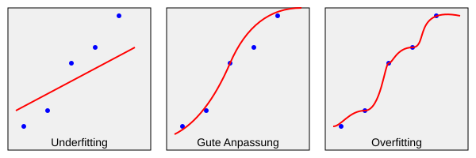
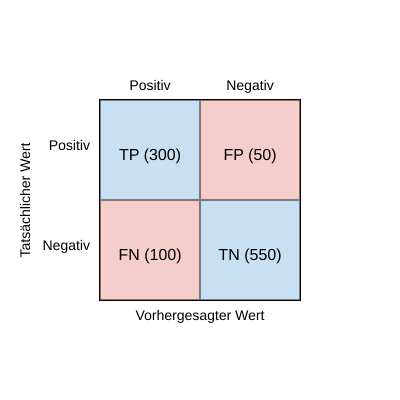

Überblick › LB 10/11 KI und Projektmanagement
11.3 KI-Systeme: Training und Optimierung
1. Von der Idee zum funktionierenden Modell
Die Entwicklung eines KI-Systems, das überwachtes maschinelles Lernen verwendet, folgt einem strukturierten Prozess. Dieser Prozess hilft dabei, die Klassifikationsgenauigkeit zu optimieren und die Praxistauglichkeit des Systems bereits während der Entwicklung zu beurteilen.
Schritte zur Entwicklung eines KI-Systems
- Daten erfassen, strukturieren und aufteilen
- Entwicklung, Training und Validierung des KI-Systems
- Testen des KI-Systems
2. Daten erfassen, strukturieren und aufteilen
Der erste Schritt bei der Entwicklung eines KI-Systems ist die Vorbereitung der Daten.
2.1 Datenaufbereitung
- Sammeln einer ausreichenden Menge repräsentativer Daten
- Strukturieren der Daten in Tabellenform
- Aussortieren oder Ergänzen unvollständiger bzw. fehlerhafter Datensätze
- Codierung der Daten in geeignete Formate (z. B. Zahlenwerte)
2.2 Datenaufteilung
Die vorhandenen Datensätze werden zufällig auf drei Gruppen verteilt:
- Trainingsdaten: der größte Anteil, verwendet zum Training des Systems
- Validierungsdaten: verwendet zur Bewertung verschiedener Hyperparameter
- Testdaten: reserviert zur finalen Überprüfung der Klassifikationsgenauigkeit
Hinweis: Wozu die Aufteilung?
Die Aufteilung der Daten hilft, Overfitting zu erkennen und die tatsächliche Leistung des Systems auf unbekannten Daten ehrlich zu beurteilen. Bei kleinen Datensätzen ersetzt man die feste Validierungsmenge oft durch eine Kreuzvalidierung: Die Trainingsdaten werden z. B. in 5 Teile zerlegt, und jeder Teil dient einmal als Validierungsmenge (siehe Titanic-Notebook in 10.4).

Vorschau: Overfitting und Underfitting
Im Hinweis oben und in den folgenden Aufgaben tauchen die Begriffe Overfitting und Underfitting schon auf, bevor sie in Abschnitt 4 ausführlich erklärt werden. Damit du sie schon jetzt anwenden kannst, hier vorab das Wichtigste:
- Overfitting (Überanpassung): Das Modell hat sich die Trainingsdaten quasi „eingeprägt“, statt die allgemeinen Muster dahinter zu lernen. Man erkennt es daran, dass die Trainingsgenauigkeit sehr hoch ist, die Validierungs- und Testgenauigkeit aber deutlich niedriger liegen.
- Underfitting (Unteranpassung): Das Modell ist zu einfach, um die Muster in den Daten überhaupt zu erfassen. Man erkennt es daran, dass Trainings-, Validierungs- und Testgenauigkeit alle drei eher niedrig sind und nah beieinander liegen.
Wie man beide Probleme genauer erkennt und vermeidet, erfährst du ausführlich in Abschnitt 4.
3. Entwicklung, Training und Validierung des KI-Systems
In dieser Phase wird das eigentliche KI-System entwickelt und trainiert.
3.1 Hyperparameter
Hyperparameter sind Einstellungen, die vor dem eigentlichen Lernprozess festgelegt werden müssen – im Unterschied zu den Werten, die das Modell selbst beim Training lernt. Ein einfaches Beispiel: Bei einem Verfahren, das eine feste Anzahl an Gruppen bilden soll, müsste vorab festgelegt werden, wie viele Gruppen das sein sollen – so eine Einstellung ist ein Hyperparameter.
Vorschau: Hyperparameter in den nächsten Kapiteln
In den folgenden Kapiteln lernst du mehrere konkrete Algorithmen kennen, bei denen genau solche Hyperparameter vorkommen, z. B. die Anzahl der Cluster-Zentren beim k-Means-Algorithmus, die maximale Baumtiefe bei Entscheidungsbäumen oder der Wert k beim k-Nächste-Nachbarn-Algorithmus. Du musst diese Begriffe jetzt noch nicht kennen – merk dir nur das Grundprinzip: Hyperparameter werden vor dem Training festgelegt und mithilfe der Validierungsdaten angepasst.
3.2 Training und Validierung
- Training des Systems mit den Trainingsdaten
- Überprüfung der Leistung mit den Validierungsdaten
- Anpassung der Hyperparameter basierend auf den Validierungsergebnissen
- Wiederholung des Prozesses mit verschiedenen Hyperparameterwerten
4. Overfitting und Underfitting
Zwei häufige Probleme beim Training von KI-Systemen sind Overfitting und Underfitting.

4.1 Underfitting
Underfitting (Unteranpassung) tritt auf, wenn das Modell zu einfach ist und die zugrundeliegenden Muster in den Daten nicht ausreichend erfasst. Da das Modell die Muster gar nicht richtig lernt, schneidet es überall schlecht ab: Trainings-, Validierungs- und Testgenauigkeit sind alle eher niedrig und liegen nah beieinander.
4.2 Overfitting
Overfitting (Überanpassung) bedeutet, dass das Modell zu komplex ist und sich zu stark an die Trainingsdaten anpasst (sie quasi „auswendig lernt“). Dadurch generalisiert es schlechter, d. h., es lässt sich schlechter auf unbekannte Fälle übertragen. Typisches Erkennungsmerkmal: Die Trainingsgenauigkeit ist sehr hoch, die Validierungs- und Testgenauigkeit liegen aber deutlich darunter.
4.3 Overfitting und Underfitting vermeiden
Um ein möglichst ausgewogenes Modell zu erhalten, gibt es verschiedene Strategien:
- Gegen Overfitting:
- Mehr und vielfältigere Trainingsdaten sammeln, damit das Modell echte Muster statt Einzelfälle lernt.
- Das Modell vereinfachen (weniger Komplexität), damit es weniger Spielraum hat, sich Einzelheiten der Trainingsdaten einzuprägen.
- Regularisierung einsetzen: Verfahren, die das Modell während des Trainings „bestrafen“, wenn es zu komplex wird (die genaue Umsetzung lernst du bei den konkreten Algorithmen).
- Training frühzeitig beenden (Early Stopping), sobald die Validierungsgenauigkeit nicht mehr steigt, obwohl die Trainingsgenauigkeit weiter zunimmt.
- Gegen Underfitting:
- Ein komplexeres Modell wählen, das mehr Muster abbilden kann.
- Länger bzw. mit mehr Durchläufen trainieren.
- Zusätzliche, aussagekräftigere Merkmale (Features) in den Daten berücksichtigen.
5. Testen des KI-Systems
Der letzte Schritt ist das Testen des optimierten Systems mit den zurückbehaltenen Testdaten.
5.1 Konfusionsmatrix
Eine Konfusionsmatrix ist ein wichtiges Werkzeug zur Visualisierung und Bewertung der Leistung eines Klassifikationsmodells. Sie zeigt, wie gut das Modell die verschiedenen Klassen vorhersagen kann.

Basierend auf dieser Konfusionsmatrix können wir wichtige Metriken berechnen:
| Metrik | Beschreibung | Formel | Beispielberechnung | Ergebnis |
|---|---|---|---|---|
| 1. Genauigkeit (Accuracy) | Gibt an, wie viele der Vorhersagen insgesamt korrekt waren. | (TP + TN) / (TP + FP + FN + TN) | (300 + 550) / (300 + 50 + 100 + 550) | 850 / 1000 = 0,85 bzw. 85 % |
| 2. Präzision (Precision) | Gibt an, wie viele der als positiv (Spam) klassifizierten E-Mails tatsächlich Spam waren. | TP / (TP + FP) | 300 / (300 + 50) | 300 / 350 ≈ 0,857 bzw. 85,7 % |
| 3. Sensitivität (Recall) | Gibt an, wie viele der tatsächlichen Spam-E-Mails korrekt erkannt wurden. | TP / (TP + FN) | 300 / (300 + 100) | 300 / 400 = 0,75 bzw. 75 % |
Je nach Anwendungsfall kann es wichtiger sein, eine bestimmte Metrik zu optimieren. Bei der Spam-Erkennung möchte man beispielsweise eine hohe Präzision, um zu vermeiden, dass wichtige E-Mails fälschlicherweise als Spam markiert werden. In medizinischen Tests könnte hingegen eine hohe Sensitivität wichtiger sein, um möglichst alle Krankheitsfälle zu erkennen.
Praxisbezug: ML Engineer
Alltag: Wenn dein E-Mail-Programm eine wichtige Nachricht im Spam-Ordner versteckt, hast du einen False Positive erlebt.
Beruf: ML Engineers (Machine-Learning-Ingenieurinnen und -Ingenieure) bringen Modelle in den laufenden Betrieb. Sie legen fest, welche Metrik für den Einsatz entscheidend ist, überwachen sie im Betrieb (die Daten ändern sich mit der Zeit!) und trainieren nach, wenn die Leistung sinkt. In der Medizintechnik muss die Leistung eines KI-Modells zudem gegenüber Behörden mit unabhängigen Testdaten nachgewiesen werden – der Sepsis-Fall unter den Links zeigt, warum.
Das Wichtigste
Datenqualität: Hochwertige, gut strukturierte Daten sind die Grundlage eines erfolgreichen KI-Systems.
Trainings-, Validierungs- und Testdaten: Mit den Trainingsdaten lernt das Modell, mit den Validierungsdaten werden Hyperparameter gewählt, die Testdaten dienen der abschließenden Überprüfung.
Underfitting und Overfitting: Underfitting: Trainings-, Validierungs- und Testgenauigkeit sind alle niedrig. Overfitting: Die Trainingsgenauigkeit ist hoch, die anderen deutlich niedriger. Ziel ist ein Modell mit hohen, nah beieinanderliegenden Werten.
Konfusionsmatrix: Tabelle, die für jede Kombination aus tatsächlicher und vorhergesagter Klasse die Anzahl der Fälle angibt; bei zwei Klassen TP, FP, FN und TN.
Genauigkeit, Präzision, Sensitivität: Genauigkeit misst, wie viele Vorhersagen insgesamt stimmen. Hohe Präzision: Eine positive Vorhersage stimmt meist. Hohe Sensitivität: Ein großer Teil der tatsächlich positiven Fälle wird erkannt.
Grundaufgaben
Aufgabe 11.3.1: Daten aufteilen AFB II
Du hast einen Datensatz mit 10.000 Beispielen für ein Bildklassifizierungsproblem.
- Wie würdest du diese Daten in Trainings-, Validierungs- und Testdaten aufteilen? Gib prozentuale Anteile an und begründe deine Entscheidung.
- Warum ist es wichtig, einen separaten Testdatensatz zu haben, der nicht für das Training oder die Validierung verwendet wird?
- Was könnte passieren, wenn du die Testdaten wiederholt verwendest, um dein Modell zu verbessern?
Aufgabe 11.3.2: Hautkrebs-Erkennung bewerten AFB II–III
Du entwickelst ein KI-Modell zur Erkennung von Hautkrebs auf Basis von Hautbildern. Nach dem Training stellst du Folgendes fest:
- Trainingsgenauigkeit: 99 %
- Validierungsgenauigkeit: 85 %
- Testgenauigkeit: 84 %
Beantworte folgende Fragen:
- Liegt hier ein Fall von Overfitting, Underfitting oder einer guten Anpassung vor? Begründe deine Antwort.
- Welche Schritte würdest du unternehmen, um die Leistung des Modells zu verbessern?
- Wie würdest du vorgehen, wenn du feststellst, dass dein Modell besonders schlecht bei der Erkennung von Hautkrebs bei Menschen mit dunkler Hautfarbe ist?
Das kann ich jetzt
Grau steht, was der Lehrplan verlangt, darunter, was das für dieses Thema konkret heißt. Hake einen Punkt ab, wenn er in deinem Hefter zusammengefasst ist und du ihn ohne Hilfe kannst. Wie du ihn zusammenfasst, entscheidest du selbst. Die Haken speichert nur dein Browser.
Lehrplan LB 10 Sammeln und Aufbereiten der Daten (Anwenden von Verfahren des Maschinellen Lernens zum Generieren einer Künstlichen Intelligenz)
Lehrplan LB 10 Test und Anpassung (Anwenden von Verfahren des Maschinellen Lernens zum Generieren einer Künstlichen Intelligenz)